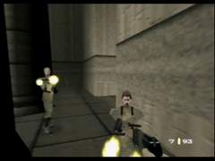
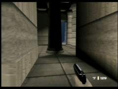
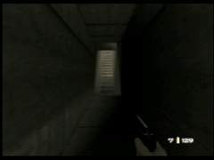
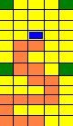

|
| Soluce
Goldeneye : Egyptian |
Qui
l'eu cru ? La Derniere Mission du Jeu ( pas de Goldeneye comprenons-nous
) est archi-simple ! Une Grosse Déception cet Egyptian...
Lorsque vous commencez, allez tout droit, et chopez quelques
Gardes. Dans la Salle juste après, allez à droite
et montez à l'Escalier. |



| Prendre
le Golden Gun : Tous Niveaux |
Une
fois dans la Salle du Golden Gun, voilà où il
vous faut marcher, sinon les Drone Guns vous shooteront tranquillement,
et en plus la Porte se ferme derriere vous ! Une fois sur
la 1ere Case, le 1ere que l'on voie à la fin du Mini-Couloir
quand vous arrivez, voilà les directions à prendre.
|
 |